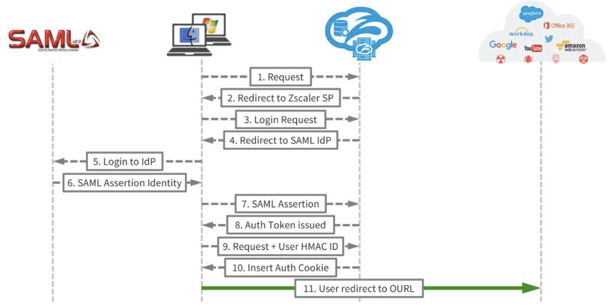
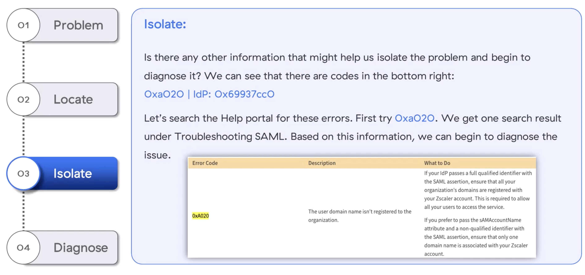
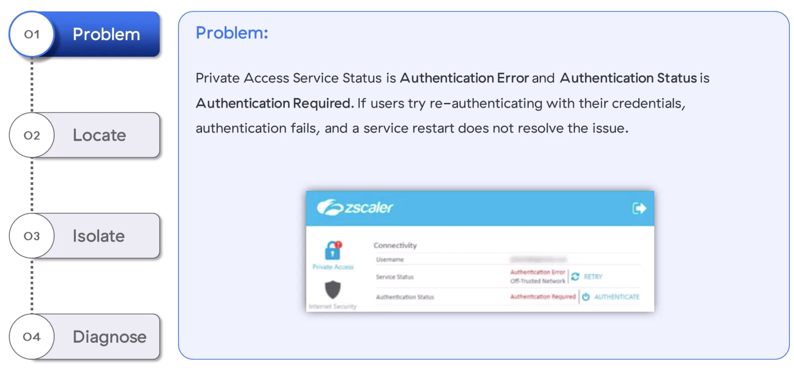
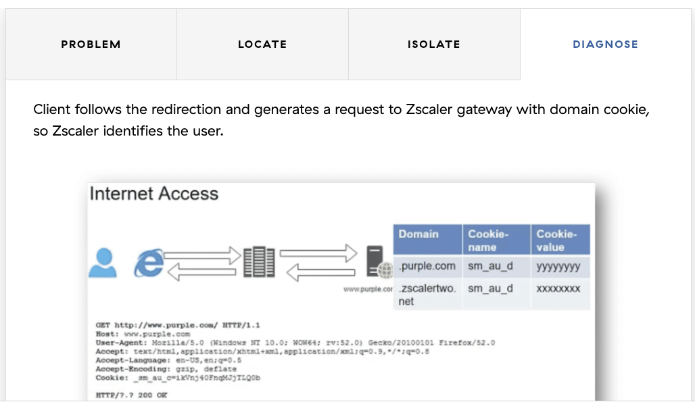

SAML, IdP, ZIA & ZPA — four real auth failures and how to fix them
"In Zero Trust, identity is the very first hop. If auth breaks, nothing else gets a chance to."
💭THINK FIRST · ZERO-TRUST AUTH
Zero Trust blocks every request until the requestor's identity is explicitly validated. SAML and OAuth are the two main exchanges; Zscaler acts as the SP, the IdP holds the credentials, and the SAML assertion is what proves the user to Zscaler.
Why must Zscaler trust the IdP's assertion rather than validate the password itself?
What's the difference between SAML's role and the auth token (HMAC ID) that Zscaler issues afterwards?
Q1 — MODEL ANSWER
Federated SSO offloads credential validation to the IdP so Zscaler never sees the password. Zscaler only sees a signed SAML assertion saying "this IdP vouches that this user is who they claim to be". This is what makes SSO + MFA possible without Zscaler having to integrate with every credential store on earth — the IdP owns identity, Zscaler owns access enforcement.
Q2 — MODEL ANSWER
SAML proves identity once, at login. After validation Zscaler issues its own auth token (an HMAC ID) and inserts an auth cookie so subsequent requests don't have to re-traverse the IdP. SAML = identity proof; the cookie = persistent session proof for the proxy itself.
SECTION 1
Authentication Overview
In Zero Trust the first decision Zscaler makes is whether the requestor (user, IoT, OT, or app) has a valid identity. Zscaler acts like a switchboard and exchange in the middle: the user-agent sends a request, Zscaler intercepts it, and identity is validated through an IdP via SAML — or against an external service via OAuth — before any traffic is allowed through.
The SAML exchange (11 steps)
User browser sends request to destination.
Zscaler intercepts; redirects to Zscaler SP.
Zscaler SP returns a login request.
Browser is redirected to the SAML IdP.
User logs into IdP (credentials, MFA).
IdP returns SAML Assertion Identity.
Browser POSTs the SAML Assertion to Zscaler.
Zscaler issues an Auth Token.
Browser request + User HMAC ID forwarded.
Zscaler inserts the Auth Cookie.
User is redirected to the original URL (OURL).

The SAML 2.0 exchange used by Zscaler. Identity is proven once at the IdP (steps 5–6); the resulting auth cookie carries the session through every subsequent request.
🧠
MENTAL NOTE
SAML flow = 11 steps. Zscaler = SP. IdP holds the credential store. Two exchanges to remember: SAML (federated) and OAuth (external). The artefact Zscaler trusts is the signed SAML Assertion; the artefact that keeps the session alive is the Auth Cookie (carrying the user's HMAC ID).
ASK A QUESTION
ADD A NOTE
💭THINK FIRST · BRANCHING ON ZIA vs ZPA
The troubleshooting flow forks early on a single binary: are we troubleshooting ZIA or ZPA? Each takes a different path to a different SAML URL. Knowing which limb you're on saves you 10 minutes.
Why does the ZIA flow check ZCC presence even though the user is hitting the web?
Q1 — MODEL ANSWER
If ZCC is installed and logged in, Zscaler already trusts the device identity via the ZCC tunnel — the auth path is shorter. If ZCC isn't installed or the user isn't logged in, Zscaler must drive a full browser-side SAML round trip. The flow branches because the steps that follow are different.
SECTION 2
Authentication Troubleshooting Flow
Both ZIA and ZPA share the same starting question — Can the user reach the Service Edge? — but diverge from there. Use these two flowcharts as a top-level map for any auth ticket.
ZPA auth flow. The critical test URL is https://samlsp.private.zscaler.com/auth/v2/login?domain=<domain>&ssotype=test — feed in the user's domain and read the returned error code.
i
SAML TEST URL
For ZPA: https://samlsp.private.zscaler.com/auth/v2/login?domain=<your-domain>&ssotype=test. The response either redirects to the IdP (success path) or returns a code such as noauthavailableforuser that maps to a specific cause in the Help portal.
🧠
MENTAL NOTE
Always branch on ZIA vs ZPA. ZIA SAML test URL = samlsp.private.zscaler.com/auth/v2/login?domain=<d>&ssotype=test. For ZIA error codes use help.zscaler.com/zia/troubleshooting-saml. For ZPA status codes use help.zscaler.com/zpa/about-zpa-session-status-codes.
ASK A QUESTION
ADD A NOTE
💭THINK FIRST · INTERNAL ERROR 0xA020
When a SAML error reads "Internal Error", the temptation is to call it a Zscaler bug. But the tiny hex codes at the bottom right of the error page (IdP code + 0xA020) tell a precise story — usually that the user's domain isn't provisioned on the tenant.
Why is "user domain not registered to the organization" the most common cause of an apparent "Internal Error"?
Q1 — MODEL ANSWER
SAML succeeds at the IdP — Zscaler sees a valid assertion. But the assertion includes a UPN/domain Zscaler doesn't recognise on the tenant, so Zscaler refuses to bind the session and surfaces a generic Internal Error. The fix is rarely "fix Zscaler" — it's provisioning the user's domain on the tenant (Admin Portal → Administration → Company Profile), or ensuring the IdP applies the correct UPN/domain suffix.
USE CASE 1 · ZIA INTERNAL ACCESS
Internet Access Authentication — Internal Error

The "Internal Error" page. Read the bottom-right hex codes (IdP code + Zscaler code 0xA020) — these map directly to a cause in help.zscaler.com.
01 · PROBLEM
User sees "We've run into an Error" after IdP login
SAML completes at the IdP but Zscaler returns: "An internal error occurred while processing your authentication request. Please try again. If the issue persists, contact your administrator." Error references the user identity and ends with codes like 0xA020 | IdP: 0x69937cc0.
02 · LOCATE
Zscaler or IdP side — read the message
"Internal error" is Zscaler-side wording. The user reached Zscaler, so the failure is downstream of the IdP. Localize to Zscaler-IdP integration.
03 · ISOLATE
Look up 0xA020 in the Help portal
help.zscaler.com → search the code → returns "Troubleshooting SAML" article. 0xA020 = "The user domain name isn't registered to the organization." If you pass the sAMAccountName attribute instead of the UPN, ensure only one domain is associated with your Zscaler account.
04 · DIAGNOSE
Provision the domain on the tenant
Step 1: review provisioned domains at Admin Portal → Administration → Company Profile. If present, check at the IdP that the correct UPN/Domain suffix is being applied. Step 2: if not provisioned, raise a provisioning-type ticket with Zscaler with the domain to be added.
🧠
MENTAL NOTE
"Internal Error" + code 0xA020 = user domain not registered. Fix path: Admin Portal → Administration → Company Profile to verify; if missing, raise a provisioning ticket. Always read the hex codes at the bottom of the error UI — they map directly to a cause article on help.zscaler.com.
ASK A QUESTION
ADD A NOTE
💭THINK FIRST · WHEN "NOAUTH-BYPASSURL" APPEARS
If web-insights logs show the user as noauth-bypassurl$ instead of an actual username, the user isn't anonymous — Zscaler simply couldn't identify them. The cause is almost always config: either no ZCC + cookie-based auth in PAC mode, or a URL/category sitting under Authentication Exemption.
Why does Zscaler route an unauthenticated transaction to a "special user" rather than just dropping it?
Q1 — MODEL ANSWER
Because some categories are intentionally exempted from auth — software updates, certificate revocation, ad networks — and the customer wants them allowed even when no user identity is available. Routing the unauthenticated transaction to a synthetic user keeps the traffic flowing while still logging it for review. If the user shouldn't be on that path, the fix is removing the exemption rather than blocking the synthetic user.
USE CASE 2 · ZIA INTERNET ACCESS
Internet Access — No Authentication Enforced
01 · PROBLEM
User shows as noauth-bypassurl$ in web-insights
A transaction logs against URL category CDN (or similar) with the user field set to noauth-bypassurl$ instead of the real username.
The Help article "Configuring Policies for Unauthenticated Traffic" matches: Zscaler couldn't identify the user (no cookie, ZCC in PAC-enforced mode). The "Authentication Bypass URL" special user points to a policy under Authentication Bypass.
03 · ISOLATE
Review Authentication Exemption config
Administration → Advanced Settings → Authentication Exemption. List which URLs, URL categories, or applications are exempt from auth.
04 · DIAGNOSE
Match URL/category against the exemption list
If the offending URL/category/app matches an entry, the behaviour is by design. If you need to see the username, remove the matching exemption or switch ZCC to tunnel mode / tunnel with local proxy so the cookie-based path goes away and ZCC supplies the identity directly.
🧠
MENTAL NOTE
Username = noauth-bypassurl$ → check Administration → Advanced Settings → Authentication Exemption. Either remove the URL/category match or switch ZCC to tunnel / tunnel-with-local-proxy mode. Cookie-based auth (PAC mode) is the precondition that allows the bypass to happen.
ASK A QUESTION
ADD A NOTE
💭THINK FIRST · ZCC SAYS "AUTH ERROR"
The ZCC status panel reads "Authentication Error / Authentication Required" but a service restart doesn't help. The IdP config is fine. That points away from auth-as-design and toward device fingerprint mismatch in the ZCC logs.
Why does Zscaler bind a device fingerprint to the session, and what breaks it?
Q1 — MODEL ANSWER
A hardware fingerprint stops a stolen auth cookie from being replayed on another machine. Anything that legitimately changes the hardware identity — a NIC swap, motherboard replacement, sometimes a major OS upgrade — invalidates the fingerprint. The fix is to log the user out of ZCC (with a one-time logout password if required) and log back in so a new fingerprint is registered.
USE CASE 3 · PRIVATE ACCESS
Private Access — ZCC Authentication Error

ZCC's Connectivity panel: Authentication Error + Authentication Required. Restart doesn't fix it — the cause hides in the ZSAAuth_* logs.
01 · PROBLEM
Private Access Status = Authentication Error
ZCC shows Authentication Required. Re-authenticating with credentials still fails. Service restart does not help.
02 · LOCATE
Past the SAML/IdP — into ZCC logs
Auth workflow has been followed; IdP config and domain/user info are correct. The fault must be inside ZCC itself.
03 · ISOLATE
Export ZCC logs · search ZSAAuth_* and ZSATunnel_*
Look at ERR log entries around the time of the error. Cross-reference with the ZPA Session Status Codes article at help.zscaler.com/zpa/about-zpa-session-status-codes.
04 · DIAGNOSE
Status code BRK_MT_AUTH_SAML_FINGER_PRINT_FAIL
"ERR zpn_client_authenticate error" with BRK_MT_AUTH_SAML_FINGER_PRINT_FAIL = hardware fingerprint changed. Ask the user to log out of ZCC (provide one-time logout password if needed), then log back in to register a new fingerprint. If unresolved, open a Support case with the ZCC log bundle.
🧠
MENTAL NOTE
ZCC "Authentication Error" + status code BRK_MT_AUTH_SAML_FINGER_PRINT_FAIL = hardware fingerprint changed. Fix: log out of ZCC (one-time logout password if needed) → log back in. Log files to search: ZSAAuth_* and ZSATunnel_*. ZPA status code reference: help.zscaler.com/zpa/about-zpa-session-status-codes.
ASK A QUESTION
ADD A NOTE
💭THINK FIRST · COOKIES vs ZCC
Without ZCC, Zscaler must identify the user from a domain cookie set by a 307-redirect to the Zscaler gateway. If the redirect fails or the cookie isn't present for both the destination domain and the Zscaler gateway domain, the user falls into the "unauth" bucket on ports 80/443.
What two domain cookies must be present for cookie-based auth to succeed, and why?
Q1 — MODEL ANSWER
Two cookies share the same name (_sm_au_c): one scoped to the destination domain (e.g. .purple.com) and one scoped to the Zscaler gateway domain (.zscalertwo.net). The destination cookie identifies the user to Zscaler in the request; the gateway cookie keeps the session alive across the redirect. If either is missing, the auth handshake breaks and the user appears as unauth.
USE CASE 4 · COOKIE AUTH
Cookie-Based Authentication Issue
When Zscaler proxy is reached on standard web ports 80/443 without the ZCC agent, Zscaler defaults to cookie-based auth. If the cookies aren't set correctly the transaction maps to a special unauth user.
01 · PROBLEM
User without ZCC cannot authenticate on 80/443
Web requests on 80/443 from a non-ZCC device fail to identify the user — transaction logs as unauth.
02 · LOCATE
ZCC absence forces cookie-based path
User PC has no ZCC. Cookie-based auth is the only available path on 80/443. Failure is in cookie issuance or scope.
03 · ISOLATE
Confirm two _sm_au_c cookies on the device
Remotely connect to the user's machine. Verify two browser cookies sharing the name _sm_au_c: one for the destination domain, one for the Zscaler gateway domain. Inspect headers for the 307 Temporary Redirect from Zscaler to the gateway endpoint that sets these cookies.
04 · DIAGNOSE
Cookies present → 200 OK with identified user
Client follows the redirect and generates a request to the Zscaler gateway carrying both cookies. Zscaler reads the gateway cookie, identifies the user, and proxies the request to the destination with a 200 OK. If cookies are blocked (browser policy, MDM, third-party-cookie rules), unblock them; if the redirect isn't happening, validate the PAC file routing and reachability to the gateway endpoint.

The healthy cookie-based flow: 307 redirect inserts the two _sm_au_c cookies, then the gateway request returns 200 OK with the user correctly identified.
🧠
MENTAL NOTE
Cookie-based auth = default for non-ZCC users on 80/443. Two cookies with the same name (_sm_au_c) — one for destination domain, one for Zscaler gateway. Triggered by a HTTP 307 Temporary Redirect. If either cookie is missing or blocked, the user logs as unauth.